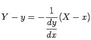
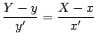

Inhalt Index DeskTop Bronstein

 Geometrie Differentialgeometrie Ebene Kurven Lokale Elemente einer Kurve
Geometrie Differentialgeometrie Ebene Kurven Lokale Elemente einer Kurve


| Art der Gleichung |
Gleichung der Tangente |
Gleichung der Normale |
| (3.448) | ||
| (3.449) |  | |
| (3.450) |  | x'(X-x)+y'(Y-y)=0 |
| Beispiel A |
|
Kreis mit x2 + y2 =25 und Punkt P(3,4):
|
| Beispiel B |
|
Sinuslinie
|
| Beispiel C |
|
Kurve mit im Punkt
|
Die Tangente und die Normale werden durch den Punkt P jeweils in eine positive und eine negative Halbgerade geteilt.
Für die Winkel  und
und  gelten die folgenden Formeln, wobei das Bogenelement ds gemäß (3.452) bis (3.454) berechnet wird:
gelten die folgenden Formeln, wobei das Bogenelement ds gemäß (3.452) bis (3.454) berechnet wird:
| Beispiel A | ||||
|
| Beispiel B | ||||
|
|
| Beispiel C | ||||
|
| (3.456a) |
| (3.456b) |
| (3.456c) |
| (3.456d) |
| (3.457a) |
| (3.457b) |
| (3.457c) |
| (3.457d) |
| Beispiel A |
|
|
| Beispiel B |
|
|
Die Berechnung des Winkels  ist damit auf die Berechnung des Winkels zwischen zwei Geraden mit den Richtungskoeffizienten
ist damit auf die Berechnung des Winkels zwischen zwei Geraden mit den Richtungskoeffizienten
| (3.458a) |
| (3.458b) |
zurückgeführt, wobei y = f1(x) die Gleichung von und y = f2(x) die Gleichung von  ist und die Ableitungen für den Punkt P zu berechnen sind. Man erhält dann
ist und die Ableitungen für den Punkt P zu berechnen sind. Man erhält dann  mit Hilfe der Formel
mit Hilfe der Formel
| (3.459) |
| Beispiel |
|
Es ist der Winkel zwischen den Parabeln und y = x2 im Punkt P(1,1) zu bestimmen: |